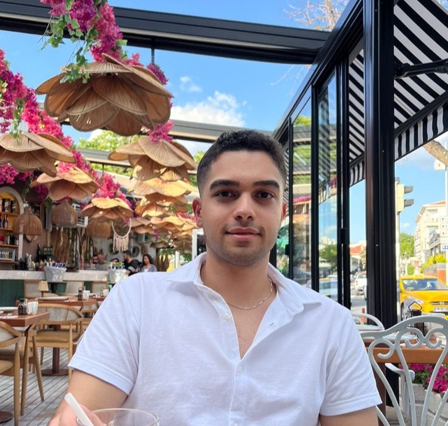

Phone
848-264-9444
R&D Systems Engineering | Full-Stack Development | Data Science
I am Parsa Keihan, an R&D Systems & Electronic Engineer at Harold Beck & Sons, Inc., and an Industrial & Systems Engineering M.E. student at Rutgers University. My work combines full-stack software development, data analytics, and machine learning-focused engineering.

My focus is translating engineering requirements into practical systems and measurable outcomes. Across internships, full-stack roles, and research projects, I have worked on collaboration platforms, AI-driven workflows, transportation and logistics tools, and academic data science support.
848-264-9444
parsa23keyhan@gmail.com
parsa.keihan@rutgers.edu
3.83
Coursework: data analytics, decision making under uncertainty, planning and operations, supply chain, quality management, production analysis, forecasting, and time series analysis.
Coursework: Algorithms & Programming, Computer Science Structures, Digital Design, Computer Organization, OOP Software Development, Database Systems, Operating Systems, Computer Graphics, and Bioinformatics.
Support electromechanical R&D through requirements analysis, V&V studies, experimental test design, root-cause investigation, prototype development, and technical reporting for internal engineering review.
Developed and delivered workshops on Python, machine learning, and AI methods; provided one-on-one consultations and virtual office hours; collaborated with the Data Librarian to expand instructional resources.
Contributed to a global video conferencing and collaboration platform and supported integration of calls, meetings, and interactive tools into an all-in-one product.
Conducted market and competitor analysis, created bilingual AI automation test cases, trained GPT-4 and Python models, applied NLP and transformer methods, and integrated AI outputs into full-stack workflows using Vue.js.
Enhanced transportation software and UI, fixed user/system issues, built a reusable full-stack e-commerce template, and worked with TypeScript, .NET, Angular, C#, and SQL in agile delivery cycles.
Implemented the website front-end, managed debugging and maintenance after launch, and updated backend SQL data with legal terms in English and Turkish.
AR/Hyper Reality shopping platform. Contributed to UML design, UI mockups, full-stack development, and periodic reporting.
Live DemoRoom and flat rental web application for listings in Turkey. Contributed to UML and UI design, frontend with HTML/CSS/JavaScript, modal implementation, and Axios-based backend integration.
GitHub RepoErasmus and exchange process platform for Bilkent University. Worked on non-functional requirements, subsystem decomposition, 3-layer architecture, behavioral diagrams, and UI management layer design.
GitHub RepoE-commerce logistics platform for checking and updating item/user status. Built with C#, MVC, DTO, JavaScript, TypeScript, HTML, and CSS.
GitHub RepoRutgers project focused on 24-hour ahead LMP forecasting using multivariate time series with exogenous variables and a two-stage ARIMAX to SARIMAX pipeline.
Ask for DetailsFull-stack development, systems analysis, AI-assisted development, and technical communication.
Data science education, engineering experimentation, and software delivery from design to deployment.
Website implementation, Sep 2023 - Feb 2024